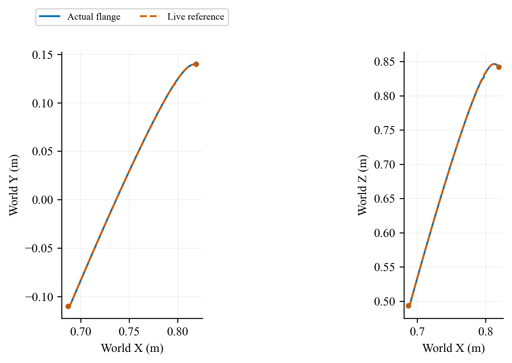
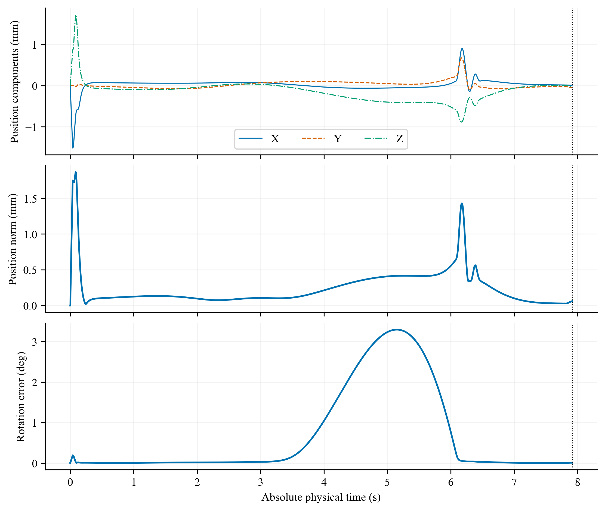
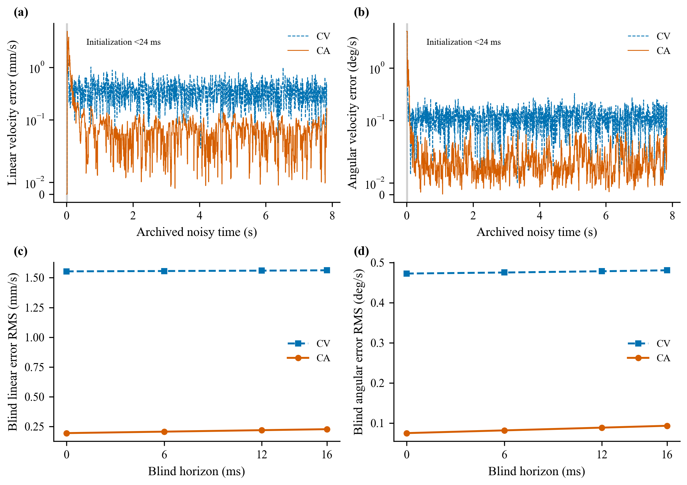
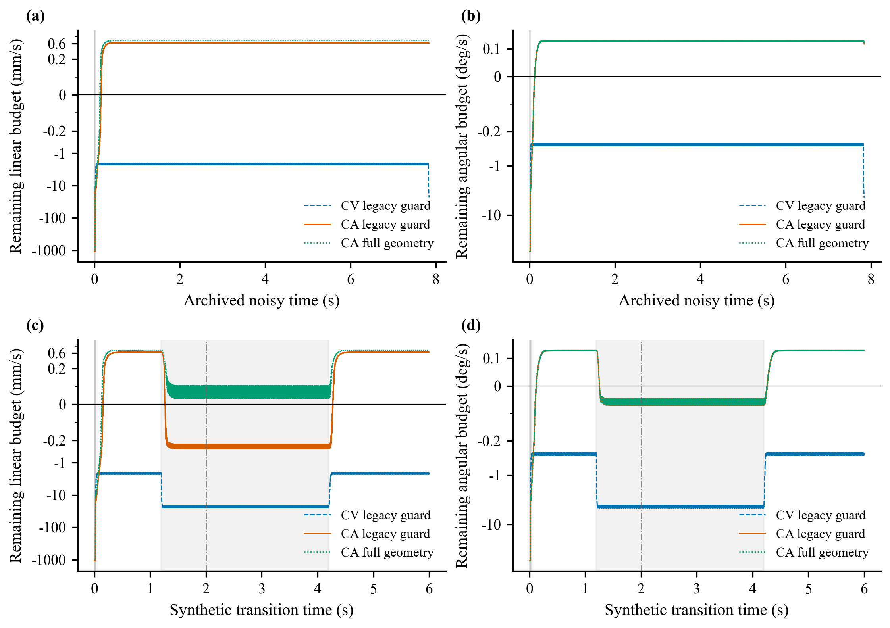
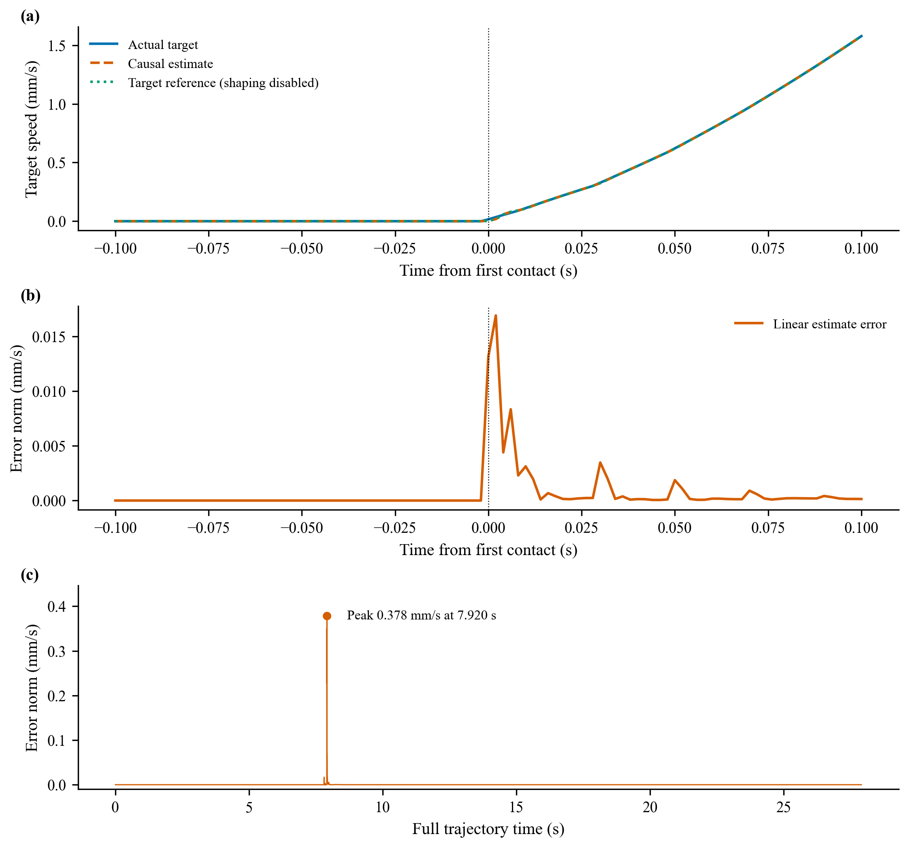
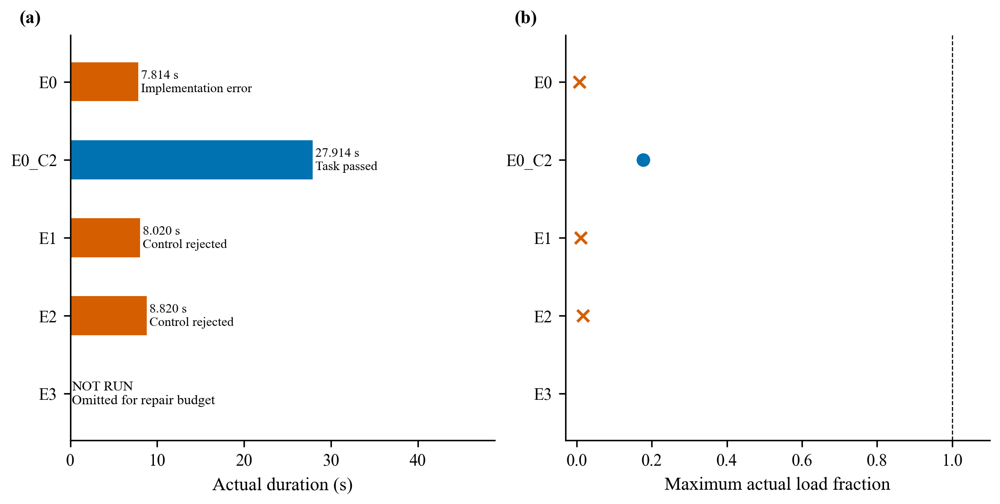

S02：ACCURACY_IMPROVED_GUARD_NOT_COMPATIBLE。E0_C2 完成完整捕获与抓后消旋；原 E0 实现失败、E1/E2 噪声条件控制拒绝均保留，E3 未运行。估计 RMS 改善不等于噪声捕获合格，启动峰值反而变大。
全部媒体读取保存的实际轨迹，显示过程不推进动力学。五个固定世界镜头、连续随基座姿态旋转的体侧镜头及接口近景采用相同时间索引；30 fps 原速，末帧为实际停止状态，视频封装时长最多增加两个帧周期。体侧是相机定义，不是柔性连续体机器人。合成分辨率 2880×1200，独立镜头 960×600。
锁紧 7.914 s，真实运行至 27.914 s；此视频不代表 E1/E2 成功。
| 运行 / 图集 | 结果 | 结束 (s) | 末窗 |
|---|---|---|---|
| E0 | IMPLEMENTATION_ERROR | 7.814 | NOT_EVALUATED |
| E0_C2 | COMPLETED | 27.914 | 已评价 |
| E1 | NO_VERIFIED_CONTROL | 8.020 | NOT_EVALUATED |
| E2 | NO_VERIFIED_CONTROL | 8.820 | NOT_EVALUATED |
E3：NOT_RUN，没有伪造轨迹或视频。





